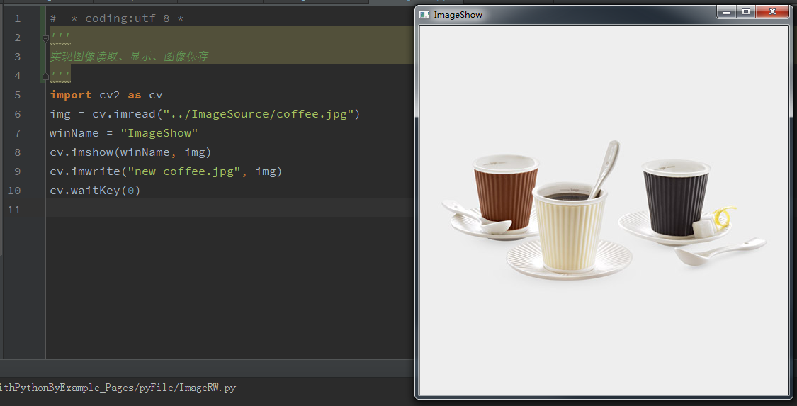

图像文件读取、显示、保存
# -*-coding:utf-8-*-
'''
实现图像读取、显示、图像保存
'''
import cv2 as cv
img = cv.imread("../ImageSource/coffee.jpg")
winName = "ImageShow"
cv.imshow(winName, img)
cv.imwrite("new_coffee.jpg", img)
cv.waitKey(0)
运行完成后，在python文件的目录下回生成一个新文件new_coffee.jpg
